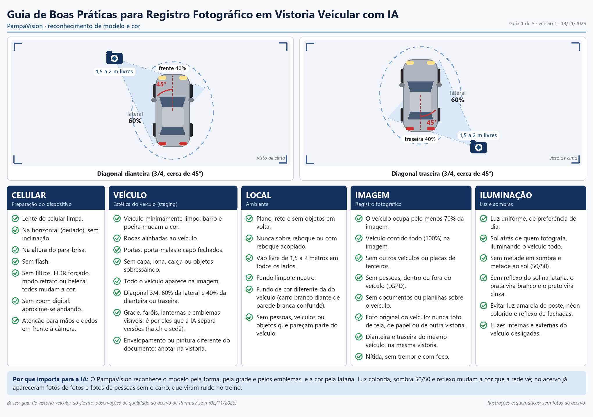

📷
Standardized photos
Front diagonal and rear diagonal of each vehicle, taken with the inspector's phone.
AL5162 · LIAA · PPGES/Unipampa · 2026/2
PampaVision uses computer vision to recognize the model and the color of the vehicle in inspection photos and check them against what was registered. When they don't match, the photo goes to a human reviewer.
The project in 3 minutes
Problem, proposal, data, results and next steps, narrated and captioned in English. No real inspection photo appears: only illustrations and aggregate numbers.
♪ Project song
The PampaVision song, made in the LIAA course (in Portuguese).
01 · Context
During an inspection, the inspector photographs the car, front and back, and records the vehicle's data. Today, checking whether the photo matches the registry is human work, photo by photo.
Front diagonal and rear diagonal of each vehicle, taken with the inspector's phone.
Make, model and color are registered. That is the reference the photo must be checked against.
Comparing photo and registry at high volume is slow and prone to fatigue. That is where computer vision helps.
02 · Problem
Recognizing a car in an inspection photo seems easy, but the real collection showed challenges that a lab dataset does not have.
Hatchback and sedan of the same family (Onix and Prisma, HB20 and HB20S) differ only at the rear.
Shadow, reflections and yellow light make silver look white and black look gray.
In the pre-screening, 20,957 of 60,042 photos had the hood open; there are photos of photos and photos without the car.
The registered color can be wrong for an entire model: a model registered as “beige” appears white in 92.8% of the photos.
License plate and chassis number are personal data (Brazil's LGPD). The photos cannot leave the responsible agency's environment.
Front and rear of the same vehicle cannot be split between training and test, otherwise the result is inflated.
Research question: can a lightweight classifier recognize model and color in real inspection photos accurately enough to support checking the registry?
03 · Proposal
Two independent classifiers, one for the model and one for the color, trained on the collection's own photos, labeled by the registry and curated.
Whole-photo classification among 38 models from 9 makes, with the YOLOv8n-cls network, small enough to run even on a phone.
A second, separate classifier for color. That way a color error does not contaminate the model, and vice versa.
When the prediction confidently disagrees with the record, the photo is flagged for human review. The AI supports; it does not decide alone.
Training and use inside the client's environment; plate and chassis hidden in the interface; the network weights do not go to third-party clouds.
04 · How it works
The path each photo takes. Hover or tap each step.
Front and rear diagonal of the vehicle, as in the best-practice guide.
A vision-language model sets aside photos with the hood open or out of standard.
Label from the registry, human review, front and rear paired by vehicle.
YOLOv8n-cls for model and for color, on GPU, with a 70/20/10 split by vehicle.
Model and color with the confidence of each, in milliseconds per photo.
Prediction × registry: whatever disagrees goes to a human.
05 · Progress
Every project milestone, from August until today. Filter by type.
06 · Results
Test with 7,414 photos the network had never seen, split by vehicle.
Of the photos evaluated in the pre-screening, those with the hood closed were kept; the import joins the front and the rear of the same car, which is why the number goes up again.
07 · In practice
Beyond the model, the project produced material for annotators and for photographers.
CVAT, Label Studio and Roboflow were installed or studied and tested with the same 92 public photos. The main difference is where each one stores the attribute (model, color, view):
| CVAT | Label Studio | Roboflow | |
|---|---|---|---|
| Runs | on premises | on premises | in the cloud |
| Attribute | on the label | on the region | class only |
| Pre-annotation | file or function | with source | vendor's |
| Review | stages | paid only | per batch |
Agreement between the two annotations: 81.5% on the model, kappa 0.80.
A one-page guide for the inspector: phone, vehicle, location, image and lighting. Also in versions for building inspection, agriculture, documents and health (in Portuguese).

08 · Ethics and LGPD
Academic use follows the data controller's procedure; anonymizing does not replace authorization.
The collection's photos do not leave the agency's environment. Tests with external vendors use public photos.
Plate and chassis appear hidden in the interface; no personal data on this site.
Every dataset and every training run is versioned and recorded, so the result can be reproduced.
The images on this site are illustrations and diagrams. No photo from the collection is published.
09 · Next steps
The list comes from the professor's feedback (37 activities) and from decisions with the advisors.
10 · Download the system
The code is in a private GitHub repository. Request access: once approved, you get an invitation and can download it.
Open the request with your GitHub username (a free account is required). Tell us who you are and how you will use it.
Once approved, GitHub sends an invitation by e-mail and at github.com/notifications.
Follow the README: Python 3.12, virtual environment, requirements.txt and rodar.bat. Works in PT, EN and ES.
The repository contains only the code. Collection photos (privacy law), trained weights and project documents are not included; use your own photos or the public demo set.